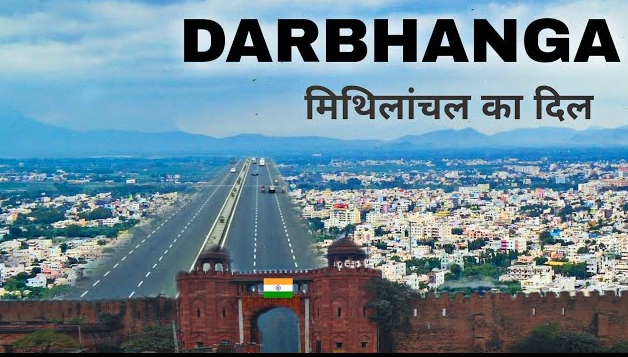

Darbhanga is one of the most famous cities of Bihar. It is known for Mithila culture, Maithili language, Mithila paintings, temples, ponds, and educational institutions like LNMU. Darbhanga is also famous for Raj Palace, Tara Mandal, Mansarovar Lake, and traditional festivals.
